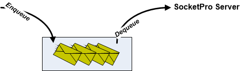
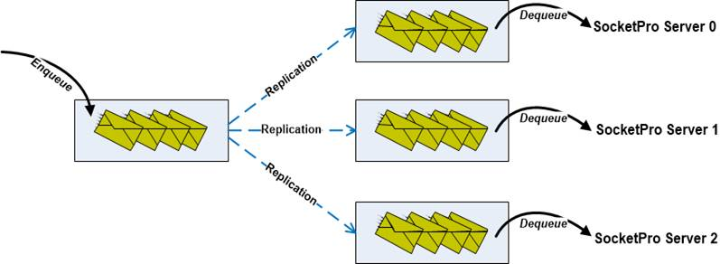
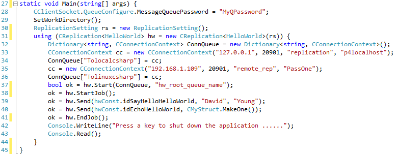

Tutorial 6 – Data Replication by Persistent Message Queue
Contents:
Introduction
Replication architectures
· One message queue to one target
· One root persistent message queue replicated to multiple ones
Replication code snippet
1. Introduction
Data replication in computing science involves sharing information to ensure consistency among redundant resources to improve reliability, accessibility and fault-tolerance. Data replication has many usages such as database replication, disk storage replication, memory/cache data replication, hybrid database replication and so on.
SocketPro supports asynchronous transactional replication fully in agreement with all ACID (atomicity, consistency, isolation and durability) properties and guarantee complete consistency among all copies of replicated data. Once target machines are connected, replicate data are pushed over network as early as possible. With the help of SocketPro replication, you can programmatically replicate selected portions of arbitrary data onto different target machines. SocketPro replication is realized by use of its client side persistent message queue.
The tutorial project is located at the directory ..\tutorials\(csharp|vbnet|cplusplus|java\src|ce|python)\replication. To test this sample, you need starting tutorial one server first. There is an extra sample about the application of SocketPro replication on MS sql server at the directory ..\samples\mssqlpush\(csharp|vbnet).
2. Replication architectures
One persistent message queue to one target: If there is only one receiving application for data, internally SocketPro directly uses one client persistent message queue as shown in Figure 1. The queued data will be pushed onto a SocketPro server as long as the server is connected. From the server side, you can process those de-queued messages as usual.

Figure 1: One persistent message queue to one target remote SocketPro server
It should be noted that there is no replication that is happening for this scenario since there is no need for any replication.
One root persistent message queue replicated to multiple ones: In case you like to push a copy of data to different SocketPro servers and ensure consistency among these copies, SocketPro will use the following architecture as shown in the Figure 2.

Figure 2: One root message queue replicated to three ones
Initially one or more messages are en-queued into a root message queue at the left side for safety. Once informed by your code, all messages stored inside the left root message queue are replicated onto three different message queues as shown in Figure 2 above. Both the left side en-queuing and successive replication are completely in agreement with all ACID requirements. Each of the three persistent message queues is connected with one remote SocketPro server. Internally, SocketPro will automatically de-queue inside messages and send them to their connected SocketPro server for successive processing.
3. Replication code snippet
It is very simple to use replication with SocketPro as shown in the Figure 3 below.

Figure 3: One root message queue replicated to two queues
As usual, we set the message queue password at line 28. Afterwards, we set a working directory to store all message queue files at line 29. Next, we create a default replication setting structure at line 30, and initialize an instance of CReplication at line 31.
At this time, we create a dictionary containing two mappings of right side queue name and connection context of Figure 2 above (Tolocalcsharp/127.0.0.1 and Tolinuxcsharp/192.168.1.109) to its remote server from lines 32 through 36.
In line 37, we start running a replication with a given name for root message queue name. If there are any messages left inside the root message queue or any previous crash detected, calling the method, Start, will lead to processing and replication of them following ACID rules.
The codes from line 38 through 41 en-queue two requests in one transaction manually. SocketPro uses StartJob and EndJob/AbortJob as database BeginTran and Commit/Rollback for manual transaction. If you don’t use lines 38 and 41, you are using auto transaction for two separate transactions as you did for all databases. However, please note that there are no callbacks involved with replication for those two requests.
To test replication, you need to start the tutorial one hello world server.